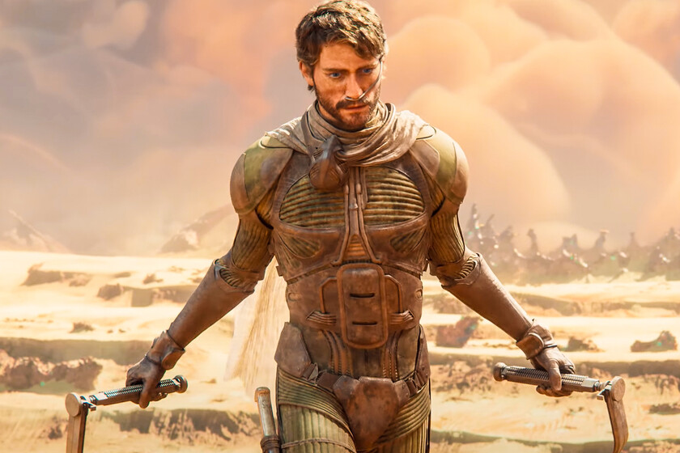

Información sobre Videojuegos
Dune es una saga de videojuegos con títulos en nuestra base de datos desde 1992 y que actualmente cuenta con un total de 6 juegos para PS2 y PC. En esta página encontrarás el listado completo con todos los juegos de Dune que existen, ordenados según su fecha de lanzamiento para que puedas saber cuál es el último juego de Dune que se ha anunciado o que ya ha salido a la venta, y cuál fue el primer juego de todos con el que se inició la saga. Además, te mostramos la nota que le han dado nuestros analistas a cada una de las entregas, para que sepas cuáles son los mejores juegos de Dune de la historia y los que más merecen la pena actualmente.